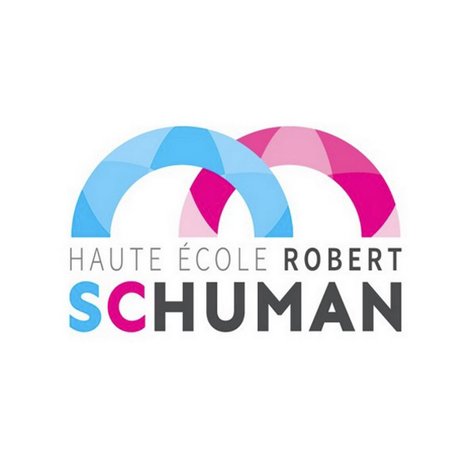

Home
Research
Teaching
Contact
Home
Research
Teaching
Contact
Home
Research
Teaching
Contact

Présentation HERS 2018
Slides "Comment booster son parcours académique ?"
Slides "Introduction à la programmation par contraintes"
Ressources programmation par contraintes
Logiciel MiniZinc
Cours Coursera sur la modélisation par contraintes
Ressources Google summer of code
2011 - Proposal pour "Boost C++ Library - Checkdigit"
: Accepté
2012 - Proposal pour "Battle of Wesnoth"
: Refusé
2013 - Proposal pour "Battle of Wesnoth"
: Accepté
2013 - Proposal pour "Boost C++ Library - Expected"
: Accepté (mais j'avais choisi ``Battle of Wesnoth'' cette année)
Autres ressources
Vidéo youtube à méditer...